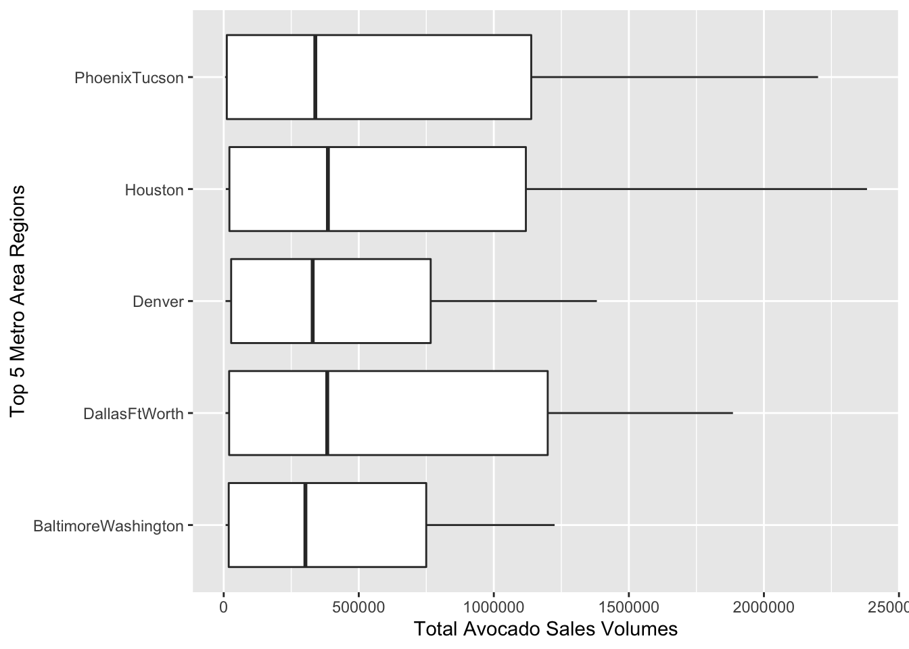
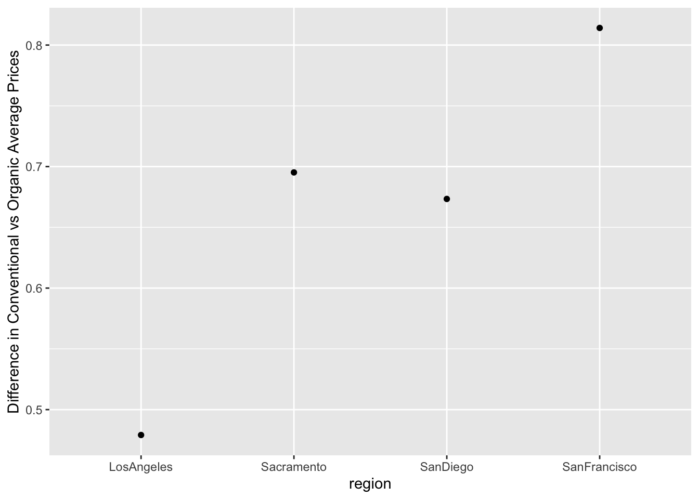
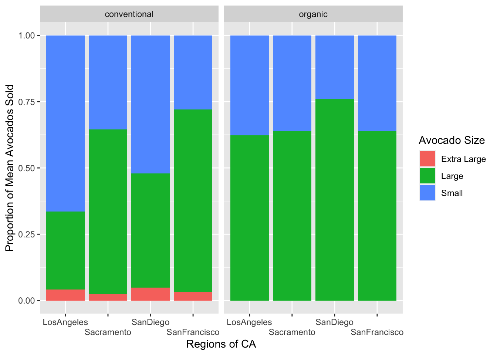

Code
library(tidyverse)
library(here)
avocados <- read_csv(here("Week 4", "Lab 4", "avocado.csv"))0.
library(tidyverse)
library(here)
avocados <- read_csv(here("Week 4", "Lab 4", "avocado.csv"))1.
Data description:
The data contains information on the sales volume (in units) of Haas avocados throughout different cities and regions in the United States.
There’s additional information indicating the type of avocado depending on it’s PLU number, conventional or organic, and average price.
#Looking at what cities/regions we're dealing with
regions_all <- avocados |>
distinct(region)Creating Tibbles to semi-join with the original data
2.
#Major regions
major_regions <- tibble(MajorRegions = c(
"WestTexNewMexico", "West", "SouthCentral",
"Plains", "NorthernNewEngland", "Northeast", "Midsouth",
"GreatLakes", "Southeast")
)
#California regions
california_regions <- tibble(CaliforniaRegions = c(
"SanFrancisco", "SanDiego", "LosAngeles","Sacramento")
)
#States
states <- tibble(States = c(
"California", "NewYork", "SouthCarolina"))
#Renaming Avocado Sizes
avocados <- avocados |>
rename("Small" = "4046",
"Large" = "4225",
"Extra Large" = "4770")3.
avocados |>
semi_join(major_regions, by = c("region" = "MajorRegions")) |>
filter(year == 2017) |>
select(region, Small) |>
group_by(region) |>
summarize("Total Sm Hass" = sum(Small)) |>
slice_max(order_by = `Total Sm Hass`)# A tibble: 1 × 2
region `Total Sm Hass`
<chr> <dbl>
1 SouthCentral 169164031.The South Central region sold the most small Hass avocados in 2017.
4.
#4
avocados |>
separate(Date, into = c("Year", "Month", "Day"), sep = "-") |>
select(Month, `Total Volume`) |>
group_by(Month) |>
summarize("Total per Month" = sum(`Total Volume`)) |>
slice_max(order_by = `Total per Month`)# A tibble: 1 × 2
Month `Total per Month`
<chr> <dbl>
1 02 1760528797.The month with the highest volume of avocado sales in February.
5.
#Filtering to only Metro Areas
Metro_Regions_Sales <- avocados |>
anti_join(major_regions, by = c("region" = "MajorRegions")) |>
anti_join(california_regions, by = c("region" = "CaliforniaRegions")) |>
anti_join(states, by = c("region" = "States")) |>
filter(region != "TotalUS")
#Calculating total avocado sales
Metro_Regions <- Metro_Regions_Sales |>
group_by(region) |>
summarize("Average Total Volume" = mean(`Total Volume`)) |>
arrange(desc(`Average Total Volume`)) |>
slice_head(n = 5)#Joining with Top 5
Metro_Regions_Sales <- Metro_Regions_Sales |>
semi_join(Metro_Regions, by = c("region"))
#Plotting Top 5
Metro_Regions_Sales |>
ggplot(mapping = aes(x = `Total Volume`, y = region)) +
geom_boxplot() +
labs(x = "Total Avocado Sales Volumes", y = "Top 5 Metro Area Regions")
6.
Organic_vs_Conventional_Cali <- avocados |>
semi_join(california_regions, by = c("region" = "CaliforniaRegions")) |>
group_by(region, type) |>
summarize("Combined Average Prices" = mean(AveragePrice)) |>
pivot_wider(names_from = type,
values_from = `Combined Average Prices`) |>
mutate("Difference in Averages" = organic - conventional)
#Visual
Organic_vs_Conventional_Cali |>
ggplot(mapping = aes(x = region, y = `Difference in Averages`)) +
geom_point() +
labs(y = "Difference in Conventional vs Organic Average Prices")
San Francisco has the highest average price difference between organic and conventional avocados.
7.
avocados_longer <- avocados |>
semi_join(california_regions, by = c("region" = "CaliforniaRegions")) |>
pivot_longer("Small":"Extra Large",
names_to = "Avocado Size",
values_to = "Number Avocados") |>
mutate(Proportion = `Number Avocados` / mean(`Total Volume`))
avocados_longer |>
ggplot(mapping = aes(x = region, y = Proportion, fill = `Avocado Size`)) +
geom_bar(position = position_fill(reverse = TRUE), stat = "identity") +
labs(x = "Regions of CA", y = "Proportion of Mean Avocados Sold") +
#Found function below on Stack Overflow
scale_x_discrete(guide = guide_axis(n.dodge=2)) +
facet_wrap(~ type)